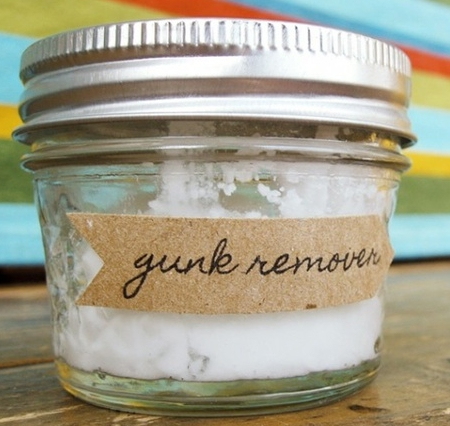

DIY Projects

Knowing how much money you just spent on your board between the deck, trucks, and wheels, you can't afford to spend any extra money. So what's better than spending as least money as possible to accessorize and make your boarding experience better?! NOTHING! So to make your longboarding excursions even better, follow some of the DIY Projects below.
Grip Tape Removal
Stop griping about removing your grip tape!.
How-To Remove Grip Tape With Lauren from EyeHandy on Vimeo.
DIY Gunk Remover
Easily remove sticky goo from your board!
Click Here for Instructions
Carpeting a Longboard
Longboard Barefoot with total comfort!
How-To Carpet a Longboard With Lauren from EyeHandy on Vimeo.